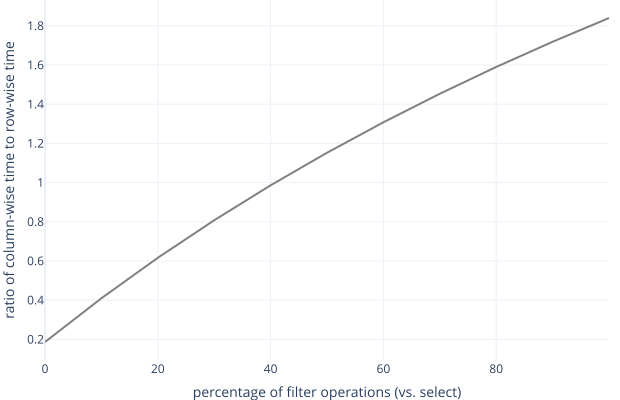

15 Performance Profiling
- Create abstract classes to specify interfaces.
- Store two-dimensional data as rows or as columns.
- Use reflection to match data to function parameters.
- Measure performance to evaluate engineering tradeoffs.
One peril of publishing a book online is obsessing over analytics. How many people visited the site today? Which pages did they look at, and for how long? Whether we use Excel, SQL, or Python, we will almost certainly be analyzing tables with named columns and multiple rows. Such tables are called dataframes, and their performance is important when we are working with large data sets. This chapter therefore implements dataframes in two ways and shows how to compare their performance.
15.1 Options
To start, let’s create an abstract class that defines the methods our dataframe classes will support. This class requires concrete classes to implement the methods shown below:
class DataFrame:
def ncol(self):
"""Report the number of columns."""
def nrow(self):
"""Report the number of rows."""
def cols(self):
"""Return the set of column names."""
def eq(self, other):
"""Check equality with another dataframe."""
def get(self, col, row):
"""Get a scalar value."""
def select(self, *names):
"""Select a named subset of columns."""
def filter(self, func):
"""Select a subset of rows by testing values."""For our first usable implementation, we will derive a class DfRow that uses row-wise storage (Figure 15.1). The dataframe is stored as a list of dictionaries, each of which represents a row. All of the dictionaries must have the same keys so that the concept of “column” is meaningful, and the values associated with a particular key must all have the same type.
Our second implementation, DfCol, will use column-wise storage (Figure 15.2). Each column is stored as a list of values, all of which are of the same type. The dataframe itself is a dictionary of such lists, all of which have the same length so that there are no holes in any of the rows. How we store the data determines which methods are easy to implement and which are hard, and which are fast or slow.
15.2 Row-Wise Storage
We start by deriving DfRow from DataFrame and writing its constructor, which takes a list of dictionaries as an argument, checks that they’re consistent with each other, and saves them:
The helper function to check that a bunch of dictionaries all have the same keys and the same types of values associated with those keys is:
def dict_match(d, prototype):
if set(d.keys()) != set(prototype.keys()):
return False
return all(isinstance(d[k], prototype[k]) for k in d)Notice that DfRow’s constructor compares all of the rows against the first row. Doing this means that we can’t create an empty dataframe, i.e., one that has no rows. This restriction wasn’t part of our original design: it’s an accident of implementation that might surprise our users. It’s OK not to fix this while we’re prototyping, but we will look at ways to address it in the exercises.
Four of the methods required by DataFrame are easy to implement on top of row-wise storage, though once again our implementation assumes there is at least one row:
Checking equality is also relatively simple. Two dataframes are the same if they have exactly the same columns and the same values in every column:
Notice that we use other.cols() and other.get() rather than reaching into the other dataframe. We are planning to implement dataframes in several different ways, and we might want to compare instances of those different implementations. Since they might have different internal data structures, the only safe way to do this is to rely on the interface defined in the base class.
Our final operations are selection, which returns a subset of the original dataframe’s columns, and filtering, which returns a subset of its rows. Since we don’t know how many columns the user might want, we give the select method a single parameter *names that will capture zero or more positional arguments. We then build a new list of dictionaries that only contain the fields with those names (Figure 15.3):
We now need to decide how to filter rows. Typical filtering conditions include, “Keep rows where red is non-zero,” “Keep rows where red is greater than green,” and, “Keep rows where red+green is within 10% of blue.” Rather than trying to anticipate every possible rule, we require users to define functions whose parameters match the names of the table’s columns. For example, if we have this test fixture:
def odd_even():
return DfRow([{"a": 1, "b": 3}, {"a": 2, "b": 4}])then we should be able to write this test:
def test_filter():
def odd(a, b):
return (a % 2) == 1
df = odd_even()
assert df.filter(odd).eq(DfRow([{"a": 1, "b": 3}]))We can implement this by using ** to spread the row across the function’s parameters (Chapter 2). If there are keys in the row that don’t match parameters in the function or vice versa, Python will throw an exception, but that’s probably what we want. Using this, the implementation of DfRow.filter is:
Notice that the dataframe created by filter re-uses the rows of the original dataframe (Figure 15.4). This is safe and efficient as long as dataframes are immutable, i.e., as long as their contents are never changed in place. Most dataframe libraries work this way: while recycling memory can save a little time, it usually also makes bugs much harder to track down.

15.3 Column-Wise Storage
Having done all of this thinking, our column-wise dataframe class is somewhat easier to write. We start as before with its constructor:
and use a helper function all_eq to check that all of the values in any column have the same types:
def all_eq(*values):
return (not values) or all(v == values[0] for v in values)The four methods that were simple to write for DfRow are equally simple to write for DfCol, though once again our prototype implementation accidentally disallows empty dataframes:
As with DfRow, the method that checks equality relies on the internal details of its own class but uses the interface defined by DataFrame to access the other object:
To select columns, we pick the ones named by the caller and use them to create a new dataframe. Again, this recycles the existing storage (Figure 15.5):
Finally, we need to filter the rows of a column-wise dataframe. Doing this is complex: since values are stored in columns, we have to extract the ones belonging to each row to pass them into the user-defined filter function (Figure 15.6). And if that wasn’t enough, we want to do this solely for the columns that the user’s function needs.
For now, we will solve this problem by requiring the user-defined filter function to define parameters to match all of the dataframe’s columns regardless of whether they are used for filtering or not. We will then build a temporary dictionary with all the values in a “row” (i.e., the corresponding values across all columns) and use ** to spread it across the filter function. Appendix G looks at a safer, but more complex, way to do this.
Time to write some tests. This one checks that we can construct a dataframe with some values:
def test_construct_with_two_pairs():
df = DfCol(a=[1, 2], b=[3, 4])
assert df.get("a", 0) == 1
assert df.get("a", 1) == 2
assert df.get("b", 0) == 3
assert df.get("b", 1) == 4while this one checks that filter works correctly:
def test_filter():
def odd(a, b):
return (a % 2) == 1
df = DfCol(a=[1, 2], b=[3, 4])
assert df.filter(odd).eq(DfCol(a=[1], b=[3]))15.4 Performance
Our two implementations of dataframes have identical interfaces, so how can we choose which to use?
To compare the speed of these classes, let’s write a short program to create dataframes of each kind and time how long it takes to select their columns and filter their rows. To keep things simple, we will create dataframes whose columns are called label_1, label_2, and so on, and whose values are all integers in the range 0–9. A thorough set of benchmarks would create columns with other datatypes as well, but this example is enough to illustrate the technique.
RANGE = 10
def make_col(nrow, ncol):
def _col(n, start):
return [((start + i) % RANGE) for i in range(n)]
fill = {f"label_{c}": _col(nrow, c) for c in range(ncol)}
return DfCol(**fill)
def make_row(nrow, ncol):
labels = [f"label_{c}" for c in range(ncol)]
def _row(r):
return {
c: ((r + i) % RANGE) for (i, c) in enumerate(labels)
}
fill = [_row(r) for r in range(nrow)]
return DfRow(fill)To time filter, we arbitrarily decide to keep rows with an even value in the first column:
FILTER = 2
def time_filter(df):
def f(label_0, **args):
return label_0 % FILTER == 1
start = time.time()
df.filter(f)
return time.time() - startSince DfCol and DfRow derive from the same base class, time_filter doesn’t care which we give it. Again, if we were doing this for real, we would look at actual programs to see what fraction of rows filtering usually kept and simulate that.
To time select, we arbitrarily decide to keep one-third of the columns:
SELECT = 3
def time_select(df):
indices = [i for i in range(df.ncol()) if ((i % SELECT) == 0)]
labels = [f"label_{i}" for i in indices]
start = time.time()
df.select(*labels)
return time.time() - startFinally, we write a function that takes a list of strings like 3x3 or 100x20, creates dataframes of each size, times operations, and reports the results. We call this function sweep because executing code multiple times with different parameters to measure performance is called parameter sweeping:
def sweep(sizes):
result = []
for (nrow, ncol) in sizes:
df_col = make_col(nrow, ncol)
df_row = make_row(nrow, ncol)
times = [
time_filter(df_col),
time_select(df_col),
time_filter(df_row),
time_select(df_row),
]
result.append([nrow, ncol, *times])
return resultThe results are shown in Table 15.1 and Figure 15.7. For a \(1000 \times 1000\) dataframe, selection is over 250 times faster with column-wise storage than with row-wise, while filtering is 1.8 times slower.
| nrow | ncol | filter col | select col | filter row | select row |
|---|---|---|---|---|---|
| 10 | 10 | 8.87e-05 | 7.70e-05 | 4.41e-05 | 2.50e-05 |
| 100 | 100 | 0.00275 | 4.10e-05 | 0.00140 | 8.76e |
| 1000 | 1000 | 0.146 | 0.000189 | 0.0787 | 0.0508 |
| 10000 | 10000 | 19.0 | 0.00234 | 9.97 | 5.57 |

We can get much more insight by profiling our code using Python cProfile module, which collects detailed information on how long each function runs and reports the result:
python -m cProfile --sort=tottime \
timing.py --silent 10x10 50x50 100x100 500x500 1000x1000 3007281 function calls (3003108 primitive calls) in 2.120 seconds
Ordered by: internal time
ncalls tottime percall cumtime percall filename:lineno(function)
2319840 0.671 0.000 0.671 0.000 util.py:10(<genexpr>)
5 0.271 0.054 0.521 0.104 df_col.py:50(filter)
1660 0.261 0.000 0.261 0.000 timing.py:20(<dictcomp>)
8066/3916 0.213 0.000 1.056 0.000 {built-in method builtins.all}
1660 0.191 0.000 0.191 0.000 df_col.py:53(<dictcomp>)The profiler’s output tells us the number of times each function or method was called, the total time spent in those calls (which is what we care about most), the time spent per call, and the cumulative time spent in that call and all the things it calls. We can see right away that the dict_match function that checks the consistency of the rows in a row-oriented dataframe is eating up a lot of time. It’s only called in the constructor, but since we’re constructing a new dataframe for each filter and select, removing that safety check would speed things up.
Looking down a little further, the dictionary comprehension in DfCol.filter takes a lot of time as well. That isn’t surprising: we’re copying the values out of the columns into a temporary dictionary for every row when we filter, and building all those temporary dictionaries adds up to a lot of time.
15.5 Summary
Figure 15.8 summarizes the key ideas introduced in this chapter. The most important is that experiments can help us decide how to implement key features of our software, but the results of those experiments depend on exactly what we measure. Good software designers collect and analyze data all the time to find out whether one website design works better than another (Kohavi et al. 2020) or to improve the performance of CPUs (Patterson and Hennessy 2017). A few simple experiments like these can save weeks or months of misguided effort.

15.6 Exercises
15.6.1 More Efficient Filtering
Derive a class from DfCol and override its filter method so that the user-defined filtering functions take zero or more columns and a row index called i_row as parameters and return True or False to signal whether the row passes the test.
How much faster does this make filtering?
When would it be useful for filtering functions to take no column at all as parameters?
15.6.2 Empty Dataframes
An empty dataframe is as reasonable and as useful as an empty string or an empty list. DfCol can represent this, but DfRow cannot: if the list of dictionaries is empty, we cannot ask for column names. Derive another dataframe class from DF that uses row-wise storage but can represent a dataframe with no rows.
15.6.3 Unified Constructors
Modify the constructors of DfRow and DfCol to have the same signatures. Where and why might this be useful?
15.6.4 Fixture Functions
Read the documentation for the @fixture decorator in pytest and modify the tests in this chapter to use it.
15.6.5 Using Arrays
Derive another dataframe class from DF that uses Python’s array module for column-wise storage. How does it perform compared to other implementations?
15.6.6 Crossover
At what ratio of filter operations to select operations are
DfRowandDfColequally fast? (Your answer may depend on the size of the dataframe.)How does the relative performance of the two classes change if tables have a fixed number of columns (such as 10 or 20) but an increasing numbers of rows? Is this scenario more realistic?
15.6.7 Conversion
Write a function to convert a DfRow into a DfCol and another to do the opposite. Which one is faster? How does the difference in performance depend on the size and shape of the dataframes being converted?
15.6.8 Filtering by Strings
Modify the comparison of filter and select to work with tables that contain columns of strings instead of columns of numbers and see how that changes performance. For testing, create random 4-letter strings using the characters A-Z and then filter by:
- an exact match,
- strings starting with a specific character, and
- strings that contain a specific character.
15.6.9 Inspection
Rewrite DfCol.filter using Python’s inspect module so that users’ filtering functions only need to define parameters for the columns of interest.
15.6.10 Join Performance
A join combines data from two tables based on matching keys. For example, if the two tables are:
| Key | Left |
|---|---|
| A | a1 |
| B | b1 |
| C | c1 |
and:
| Key | Right |
|---|---|
| A | a2 |
| A | a3 |
| B | b2 |
then the join is:
| Key | Left | Right |
|---|---|---|
| A | a1 | a2 |
| A | a1 | a3 |
| B | b1 | b2 |
Write a test to compare the performance of row-wise vs. column-wise storage when joining two tables based on matching numeric keys. Does the answer depend on the fraction of keys that match?
15.6.11 Join Optimization
The simplest way to join two tables is to look for matching keys using a double loop. An alternative is to build an index for each table and then use it to construct matches. For example, suppose the tables are:
| Key | Left |
|---|---|
| A | a1 |
| B | b1 |
| C | c1 |
and:
| Key | Right |
|---|---|
| A | a2 |
| A | a3 |
| B | b2 |
The first step is to create a Map showing where each key is found in the first table:
{"A": [0], "B": [1], "C": [2]}The second step is to create a similar Map for the second table:
{"A": [0, 1], "B": [2]}We can then loop over the keys in one of the maps, look up values in the second map, and construct all of the matches.
Write a function that joins two tables this way. Is it faster or slower than using a double loop? How does the answer depend on the number of keys and the fraction that match?